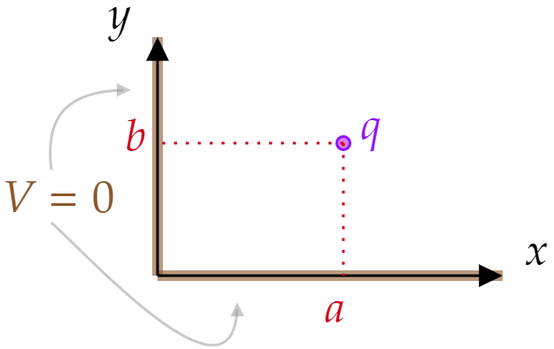
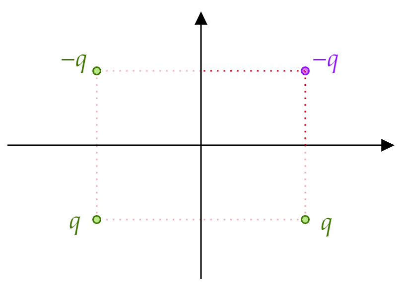
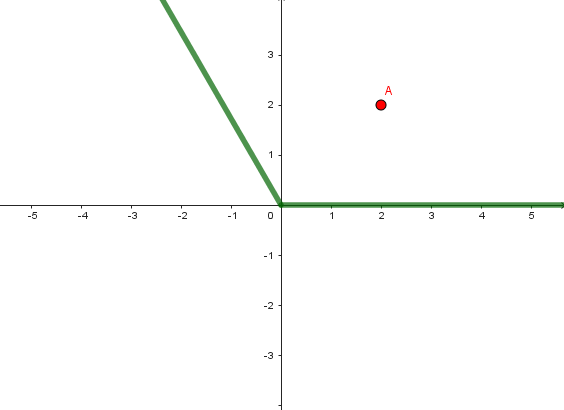
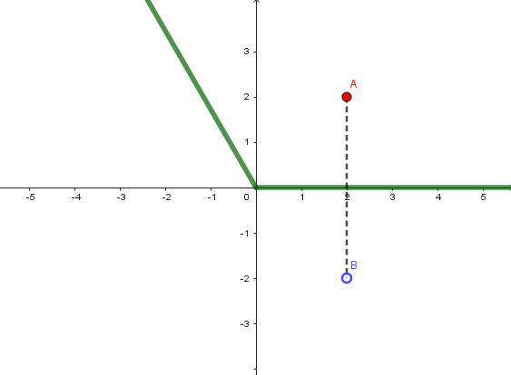
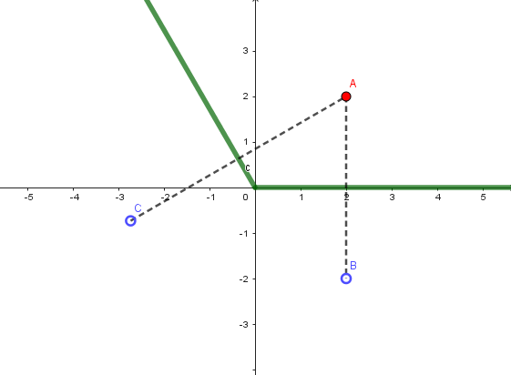
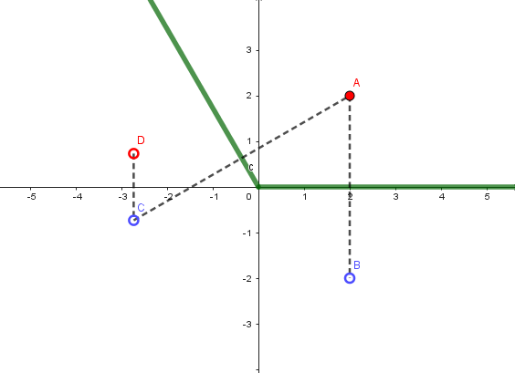
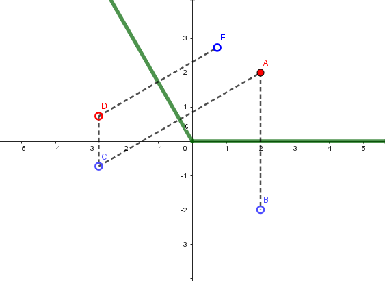
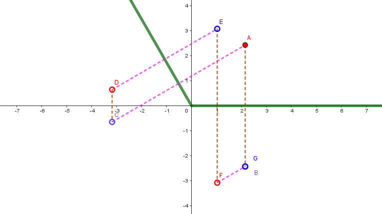

Two semi-infinite grounded conducting planes meet at right angles. In the region between them, there is a point charge $q $, situated as shown in Fig. 3.15. Set up the image configuration, and calculate the potential in this region.
What charges do you need, and where should they be located?
What is the force on $q $?
How much work did it take to bring $q $ in from infinity?
Suppose the planes met at some angler other than 90 degrees. Would you still be able to solve the problem by the method of images? If not, for what particular angles does the method work?
We have to place image charges in such a way that we can replicate the boundary conditions.
Let's start by formalizing where $q $ is: $q $ is in $(a,b) $. The region of interest is the 1st quadrant of the $xy $-plane (top right). There are 2 boundary conditions:
\begin{align*} V(0,y) &= 0 \tag{For all $y\geq 0 $}\\ V(x,0) &= 0 \tag{For all $x\geq 0 $} \end{align*}To achieve the first, we can place a $-q $ charge at $(-a,b) $. To achieve the second, we can place a $-q $ charge at $(a,-b) $. Now, notice that at $(0,0) $ we don't quite have $V=0 $. To achieve this, let's place a charge $+q $ at $(-a,-b) $. Visually:
Notice how the potential (red surface) is 0 on the axes:
Because of the first uniqueness theorem (see page 119 of your book), it follows that the potential of the dual semi-infinite plane and charge $q $ is the same as that of the 4 charges above. Again, this follows because the potential at the boundary is the same. Writing the potential for the 4 charge configuration is straightforward:
\begin{align*} V(x,y) &= V_{\text{Due to top right charge} }+ V_{\text{Due to bottom left charge} }+V_{\text{Due to top left charge} }+V_{\text{Due to bottom right charge} }\\ &= \frac{q}{4\pi \epsilon _0}\bigg( \frac{1}{\sqrt{(x-a)^2 +(y-b)^2 }}\\ &{\;} \;\;\; + \frac{1}{\sqrt{(x+a)^2 +(y+b)^2 }} \\ &{\;} \;\;\; - \frac{1}{\sqrt{(x-a)^2 +(y+b)^2 }} \\ &{\;} \;\;\; - \frac{1}{\sqrt{(x+a)^2 +(y-b)^2 }} \bigg) \end{align*}The force on $q $ can be calculated using the other 3 (image) charges. With TL denoting Top Left, BL Bottom Left, and BR Bottom Right, we have:
\begin{align*} \mathbf{F} &= \mathbf{F}_{\text{Due to TL} }+\mathbf{F}_{\text{Due to BR} }+\mathbf{F}_{\text{Due to BL} } \\ &= q\cdot \mathbf{E}_{\text{TL} }\Big|_{(a,b)} +q\cdot \mathbf{E}_{\text{BR} }\Big|_{(a,b)}+q\cdot \mathbf{E}_{\text{BL} }\Big|_{(a,b)} \\ &= q\bigg( -\frac{q}{4\pi \epsilon _0 }\frac{1}{(2a)^2 }\hat{\mathbf{x}} - \frac{q}{4\pi \epsilon _0 }\frac{1}{(2b)^2 }\hat{\mathbf{y}} \\ &=+ \frac{q}{4\pi \epsilon _0 }\frac{1}{(2\sqrt{a^2 +b^2 })^2 } \left( \frac{a}{\sqrt{a^2 +b^2 }} \hat{\mathbf{x}} + \frac{b}{\sqrt{a^2 +b^2 }}\hat{\mathbf{y}} \right) \bigg)\\ &= \frac{q^2 }{16\pi \epsilon _0 }\bigg ( \bigg ( \frac{a}{ \left[ a^2 +b^2 \right] ^{3/2}}-\frac{1}{a^2 } \bigg) \hat{\mathbf{x}} + \bigg ( \frac{b}{ \left[ a^2 +b^2 \right] ^{3/2}}-\frac{1}{b^2 } \bigg)\hat{\mathbf{y}} \bigg) \end{align*}The work can be calculated using the image configuration. Recall from chapter 2 that:
\[W=\frac{1}{2}\sum_{i=1}^{n} q_iV(\mathbf{r}_i ) \tag{Eq. 2.42, page 9.} \]Where the potential will be the potential from the 3 image charges:
\begin{align*} V_{\text{image} }(x,y) &= V_{\text{Due to bottom left charge} }+V_{\text{Due to top left charge} }+V_{\text{Due to bottom right charge} }\\ &= \frac{q}{4\pi \epsilon _0}\bigg( \frac{1}{\sqrt{(x+a)^2 +(y+b)^2 }} \\ &{\;} \;\;\; - \frac{1}{\sqrt{(x-a)^2 +(y+b)^2 }} \\ &{\;} \;\;\; - \frac{1}{\sqrt{(x+a)^2 +(y-b)^2 }} \bigg) \end{align*}Which evaluated at $(a,b) $ gives:
\begin{align*} V_{\text{image} }(a,b) &= \frac{q}{4\pi \epsilon _0 }\bigg( +\frac{1}{\sqrt{(2a^2 )+(2b)^2 }}-\frac{1}{\sqrt{(2a)^2}} - \frac{1}{\sqrt{(2b)^2 }} \bigg) \\ &= \frac{q}{4\pi \epsilon _0 } \frac{1}{2}\bigg(\frac{1}{\sqrt{a^2 +b^2 }}-\frac{1}{a}-\frac{1}{b} \bigg) \end{align*}So
\begin{align*} W &= \frac{1}{2} \frac{q}{4\pi \epsilon _0 } \frac{1}{2}\bigg(\frac{1}{\sqrt{a^2 +b^2 }}-\frac{1}{a}-\frac{1}{b} \bigg)\\ &= \frac{q}{16\pi \epsilon _0 } \bigg(\frac{1}{\sqrt{a^2 +b^2 }}-\frac{1}{a}-\frac{1}{b} \bigg) \end{align*}To see at what other angles this would work, go look at the plot of the potential again (red surface above). We see that we created 4 regions that behave quite similarly. This is precisely the key to answer this: we need to divide the plane in equal sections, and to do this the angle has to be an (integer) divisor of 180 degrees.
Other angles won't work as they will require us to add image charges inside the region we are interested in studying. Consider, for instance, 120 degrees. This is an enlightening example, as it divides 360 (not 180, though, which is what we are really interested in):
Place a charge anywhere in the area of interest, and consider the 2 grounded semi-planes:
To have $V=0 $ on the bottom semi-plane, reflect the charge $A $ across the line, obtain $B $:
To have $V=0 $ on the angled semi-plane, reflect the charge $A $ across the line, obtain $C $:
 But after we added $C $, $V $ is no longer 0 on the bottom semi-plane, so let's reflect $C $ across the bottom line, obtain $D $:  But after we added $D $, $V $ is no longer 0 on the angled semi-plane, so let's reflect $D $ across the angles line, obtain $E $:  There are 2 issues here, the second more important than the first:(1) It is clear that we will need to add yet another charge (reflecting $E $ across the bottom line). Will we need another one for the new one? What about the next one? That is, will this sequence ever converge? I will let you think about that on your free time. Regardless of this, there is a bigger problem here:
(2) We placed a charge inside the region of interest. That is, we have a different problem and this no longer represents the initial configuration.
Extra: The answer to whether the sequence of reflections ever converges is that, yes:
We reflect $E $ to get $F $, and then we reflect $F $ to get $G $, but $G $ goes exactly where $B $ is! Notice that we have the same amount of perpendicular lines for each of the semi-planes.